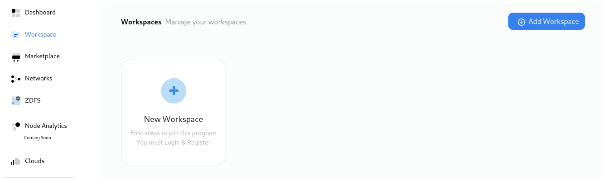

How to create my first Network?¶
Zeeve makes the process of blockchain network deployment from a long time consuming one to just a matter of few clicks whilst taking care of the most important bits.
With a handful of steps using Zeeve, it has become so easy to create your own blockchain network. These networks can also be altered as per the need of the required deployment with the help of given protocol specific parameters that helps you align with your desired network performance.
So wondering upon how to begin? Just follow these easy steps:-
Create workspace¶
Click on Workspace on the left side navigation bar.

You will be landed to a page similar to below image.

Click on New workspace. A pop up window will appear.

Give it a name of your choice(in our case we are going to name it Ethereum) and add a short description. Click create. You can see your newly created workspace added to the workspace tab.

Create Network¶
Click on Workspace on the left side navigation bar.
You will be landed to Zeeve’s network listing page where you will get the list of all of the networks you created. Click on Add Network.

You will be landed to the Network Configuration page which looks similar to the below image.

Here you will get to see different cards with different network configuration of diffrent protocols. These cards can be different according to your purchased subscriptions.
Choose the configuration of your choice for creating a network, and click on a card accordingly.
To see protocol specific configuration parameters please refer to the detailed deployment spec using the following links.